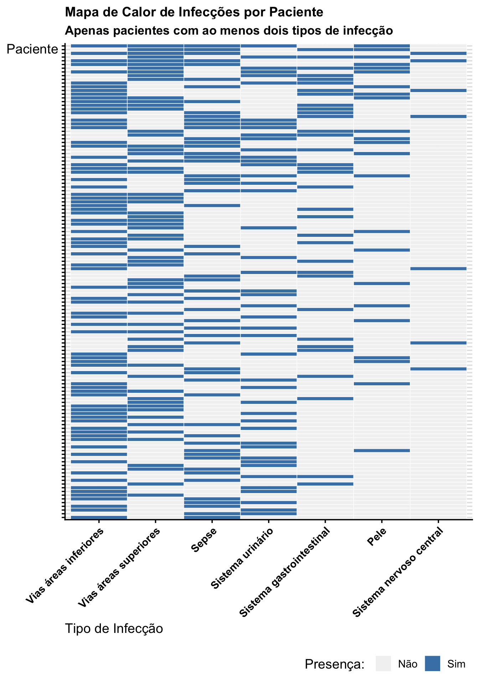
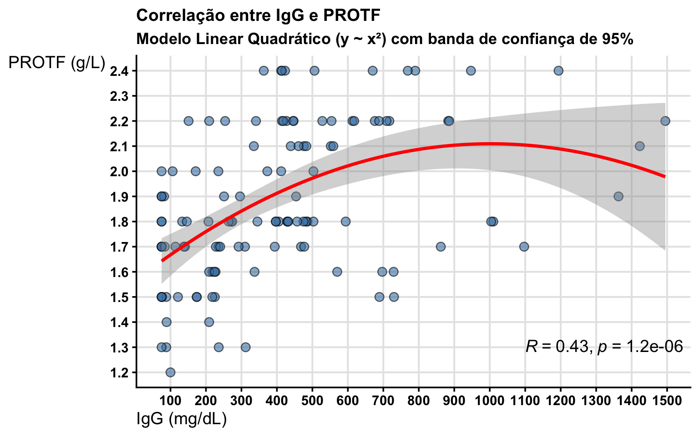
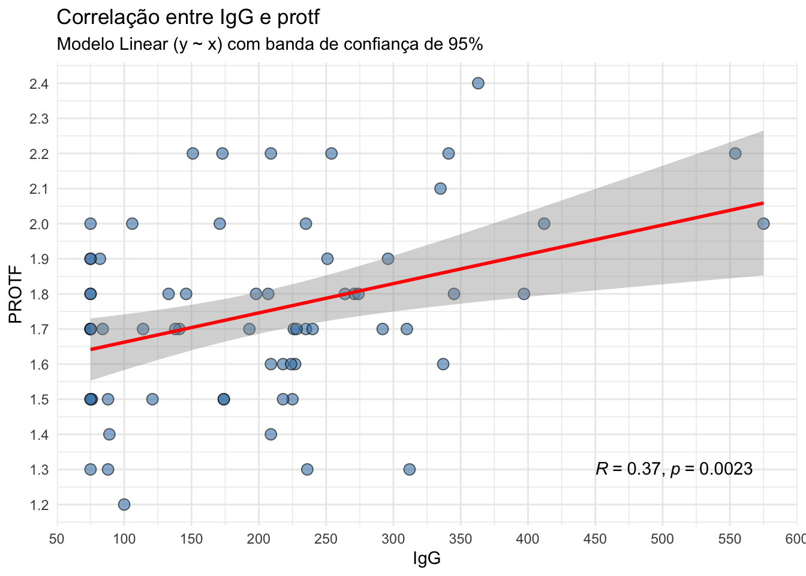
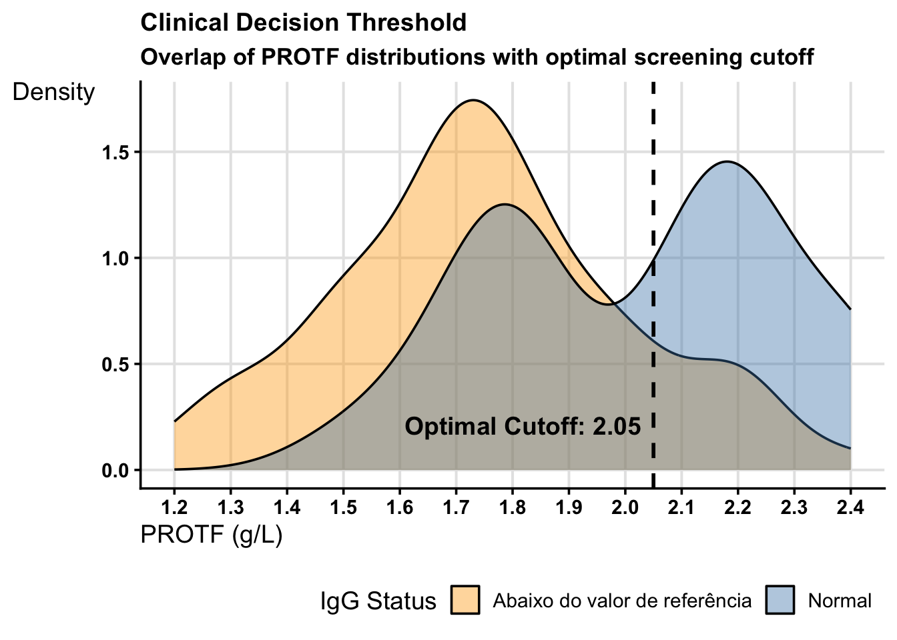

protf_url <-paste0("https://docs.google.com/spreadsheets/d/","1k3vlSk4e4mHMwTHZVnDpSTXyMReXLTGsgk82rHVILgQ/","edit?gid=402323031#gid=402323031")protf <- googlesheets4::read_sheet(protf_url) |> dplyr::distinct()protf <- protf |> dplyr::mutate(IDADE = lubridate::time_length( lubridate::interval(`6 - Data de Nascimento`, `5 - Data de Cadastro do Exame`), "years" ) )
Calculando a idade dos pacientes vemos dois casos com data de cadastro do exame anterior a sua data de nascimento.
Code
protf |> dplyr::filter(IDADE <=0) |> dplyr::select(`1 - Insira o Prontuário do Paciente`,`5 - Data de Cadastro do Exame`,`6 - Data de Nascimento` )
# A tibble: 2 × 3
1 - Insira o Prontuário do Pac…¹ 5 - Data de Cadastro…² 6 - Data de Nascimen…³
<dbl> <dttm> <dttm>
1 656997 2023-11-11 00:00:00 2024-07-04 00:00:00
2 657794 2016-12-01 00:00:00 2024-10-16 00:00:00
# ℹ abbreviated names: ¹`1 - Insira o Prontuário do Paciente`,
# ²`5 - Data de Cadastro do Exame`, ³`6 - Data de Nascimento`
Atenção! Dado duplicado mas com diferenças
Nem todas as entradas são iguais. Ver com detalhe na planilha Google Sheets.
Code
protf |> dplyr::filter(`1 - Insira o Prontuário do Paciente`==638992)
# A tibble: 2 × 62
`Carimbo de data/hora` `Endereço de e-mail` 1 - Insira o Prontuár…¹
<dttm> <chr> <dbl>
1 2025-08-14 16:39:23 maria.colodel@aluno.fpp.edu.br 638992
2 2025-08-21 16:42:09 lara.zawadniak@aluno.fpp.edu.br 638992
# ℹ abbreviated name: ¹`1 - Insira o Prontuário do Paciente`
# ℹ 59 more variables: `2 - Insira o Setor de Solicitação do exame` <chr>,
# `3 - Insira Faixa etária do paciente` <chr>, `4 - Sexo` <chr>,
# `5 - Data de Cadastro do Exame` <dttm>, `6 - Data de Nascimento` <dttm>,
# `7 - Quadros infecciosos até o momento da coleta?` <chr>,
# `8 - Infecção em sistema nervoso central?` <chr>,
# `8.1 - Quantas vezes?\n\n- Considerar número total` <dbl>, …
1. Análise epidemiológica:
a) Porcentagem de cada faixa etária na amostra
Code
protf |> dplyr::count(`3 - Insira Faixa etária do paciente`) |> dplyr::mutate(Percentual = n /nrow(protf))
# A tibble: 5 × 3
`3 - Insira Faixa etária do paciente` n Percentual
<chr> <int> <dbl>
1 1 ano a 3 anos 189 0.237
2 10 anos a 17 anos 151 0.189
3 4 anos a 9 anos 228 0.285
4 < 1 ano 229 0.287
5 > 18 anos 2 0.00250
b) Setores mais representativos na amostra
Code
protf |> dplyr::count(`2 - Insira o Setor de Solicitação do exame`) |> dplyr::mutate(Percentual = n /nrow(protf)) |> dplyr::arrange(dplyr::desc(n)) |>print(n =28)
# A tibble: 28 × 3
`2 - Insira o Setor de Solicitação do exame` n Percentual
<chr> <int> <dbl>
1 Laboratório de Analises Clinicas 181 0.227
2 UTI Cardiologia 126 0.158
3 Emergência SUS Interno 70 0.0876
4 Emergência Convenio 69 0.0864
5 UTI Neonatal 43 0.0538
6 UTI Geral 40 0.0501
7 Posto 11 Nefrologia 37 0.0463
8 Posto 52 29 0.0363
9 Posto 21 24 0.0300
10 Emergência SUS 22 0.0275
11 Posto 41 21 0.0263
12 Posto 42 21 0.0263
13 UTI Cirúrgica 21 0.0263
14 Posto 51 18 0.0225
15 Posto 23 14 0.0175
16 Emergência Convenio Internamento 11 0.0138
17 Infectologia 10 0.0125
18 Posto 33 10 0.0125
19 Posto 24 9 0.0113
20 Ambulatório Hemato-Oncologia 8 0.0100
21 Hemodialise 4 0.00501
22 Posto 31 4 0.00501
23 Emergência SUS Externo 2 0.00250
24 Ambulatório Especialidades I SUS 1 0.00125
25 Emergência Convenio Externo 1 0.00125
26 Posto 34 1 0.00125
27 Posto 43 1 0.00125
28 U.I 4º Andar - Posto 40 1 0.00125
c) Sexo
Code
protf |> dplyr::count(`4 - Sexo`) |> dplyr::mutate(Percentual = n /nrow(protf))
# A tibble: 3 × 3
`4 - Sexo` n Percentual
<chr> <int> <dbl>
1 Feminino 342 0.428
2 Masculino 456 0.571
3 Paciente XX no PEP (e primeira evolução, e única, consta T21… 1 0.00125
d) Presença/ausência de quadros infecciosos e sistema mais afetado em casos positivos para quadros infecciosos
Code
protf |> dplyr::count(`7 - Quadros infecciosos até o momento da coleta?`) |> dplyr::mutate(Percentual = n /nrow(protf))
# A tibble: 3 × 3
`7 - Quadros infecciosos até o momento da coleta?` n Percentual
<chr> <int> <dbl>
1 Não 309 0.387
2 Sem informação 116 0.145
3 Sim 374 0.468
Em quem tem caso positivo para quadro infeccioso
Code
protf |> dplyr::filter(`7 - Quadros infecciosos até o momento da coleta?`=="Sim") |> dplyr::select(`8 - Infecção em sistema nervoso central?`,`9 - Infecção de vias áreas superiores?`,`10 - Infecção de vias áreas inferiores?`,`11 - Infecção de sistema urinário?`,`12 - Infecção de sistema gastrointestinal?`,`13 - Infecção de pele?`,`14 - Sepse?`) |> tidyr::pivot_longer(`8 - Infecção em sistema nervoso central?`:`14 - Sepse?`) |> dplyr::filter(value =="Sim") |> dplyr::count(name) |> dplyr::mutate(Percentual = n /sum(n)) |> dplyr::arrange(dplyr::desc(n))
# A tibble: 7 × 3
name n Percentual
<chr> <int> <dbl>
1 10 - Infecção de vias áreas inferiores? 122 0.242
2 14 - Sepse? 113 0.224
3 9 - Infecção de vias áreas superiores? 111 0.220
4 11 - Infecção de sistema urinário? 68 0.135
5 12 - Infecção de sistema gastrointestinal? 48 0.0952
6 13 - Infecção de pele? 32 0.0635
7 8 - Infecção em sistema nervoso central? 10 0.0198
Dos 374 pacientes com quadro infeccioso, 302 apresentaram em mais de um sistema (ao menos em dois). 80.75%.
Nestes 302, estes são os sintomas que aparecem e em quantos dos 302 pacientes.
Code
proxy <- protf |> dplyr::filter(`7 - Quadros infecciosos até o momento da coleta?`=="Sim" ) |> dplyr::select(`1 - Insira o Prontuário do Paciente`,`8 - Infecção em sistema nervoso central?`,`9 - Infecção de vias áreas superiores?`,`10 - Infecção de vias áreas inferiores?`,`11 - Infecção de sistema urinário?`,`12 - Infecção de sistema gastrointestinal?`,`13 - Infecção de pele?`,`14 - Sepse?`) |> tidyr::pivot_longer(!`1 - Insira o Prontuário do Paciente`) |> dplyr::filter(value =="Sim") |> dplyr::group_by(`1 - Insira o Prontuário do Paciente`) |> dplyr::mutate(n = dplyr::n()) |> dplyr::ungroup() |> dplyr::filter(n >1) |> dplyr::arrange(dplyr::desc(n), `1 - Insira o Prontuário do Paciente`) ( proxy2 <- proxy |> dplyr::select(!c(value, n)) |>mutate(name = stringr::str_remove(name, "^[0-9]+ - "),name = stringr::str_remove(name, "\\?"),name = stringr::str_remove(name, "Infecção (de|em) "),name = stringr::str_to_sentence(name)) |> dplyr::count(name) |> dplyr::arrange(dplyr::desc(n)) |> dplyr::mutate(Percentual = n /302) )
# A tibble: 7 × 3
name n Percentual
<chr> <int> <dbl>
1 Vias áreas inferiores 78 0.258
2 Vias áreas superiores 62 0.205
3 Sepse 53 0.175
4 Sistema urinário 45 0.149
5 Sistema gastrointestinal 34 0.113
6 Pele 23 0.0762
7 Sistema nervoso central 7 0.0232
O máximo de infecções que um paciente apresenta são 5, e 5 pacientes ficaram em tal situação.
Code
proxy |> dplyr::mutate(value =ifelse(value =="Sim", 1, 0)) |> dplyr::distinct() |># ------------------------------------------------------- tidyr::pivot_wider(names_from = name, values_from = value, values_fill =0) |> dplyr::select(-n) |> tidyr::pivot_longer(-`1 - Insira o Prontuário do Paciente`, names_to ="Infection_Type", values_to ="Present") |>mutate(Infection_Type = stringr::str_remove(Infection_Type, "^[0-9]+ - "),Infection_Type = stringr::str_remove(Infection_Type, "\\?"),Infection_Type = stringr::str_remove(Infection_Type, "Infecção (de|em) "),Infection_Type = stringr::str_to_sentence(Infection_Type)) |>ggplot() +aes(x =factor(Infection_Type, levels =unique(proxy2$name)), y =factor(`1 - Insira o Prontuário do Paciente`, levels =unique(proxy$`1 - Insira o Prontuário do Paciente`) |>rev() ), fill =as.factor(Present) ) +geom_tile(color ="white") +# Adds a grid line effectscale_fill_manual(values =c("0"="grey95", "1"="steelblue"),labels =c("Não", "Sim"),name ="Presença: ") +labs(x ="Tipo de Infecção", y ="Paciente",title ="Mapa de Calor de Infecções por Paciente",subtitle ="Apenas pacientes com ao menos dois tipos de infecção") +theme(axis.text.x =element_text(angle =45, hjust =1)) +scale_y_discrete(labels =NULL)

e) Porcentagem de indivíduos com comorbidade e comorbidades mais frequentes
Code
protf |> dplyr::count(`20 - Paciente possui alguma comorbidade/diagnostico de base?`) |> dplyr::mutate(Percentual = n /nrow(protf))
# A tibble: 3 × 3
20 - Paciente possui alguma comorbidade/diagnostico de base…¹ n Percentual
<chr> <int> <dbl>
1 Não 95 0.119
2 Sem informação 62 0.0776
3 Sim 642 0.804
# ℹ abbreviated name:
# ¹`20 - Paciente possui alguma comorbidade/diagnostico de base?`
Code
protf |> dplyr::filter(`20 - Paciente possui alguma comorbidade/diagnostico de base?`=="Sim" ) |> dplyr::count(`20.1 - Qual comorbidade o paciente possui?-Em caso negativo responder com NA`) |> dplyr::mutate(Percentual = n /642) |> dplyr::arrange(dplyr::desc(n)) |> dplyr::filter(n >1) |>print(n =50)
# A tibble: 3 × 3
`21 - Paciente realiza hemodiálise?` n Percentual
<chr> <int> <dbl>
1 Não 619 0.775
2 Sem informação 115 0.144
3 Sim 65 0.0814
g) Porcentagem de pacientes que passaram por cirurgia nos 30 dias antes do exame
Code
protf |> dplyr::count(`22 - Paciente passou por cirurgia nos 30 dias que antecederam a realização do exame PROTF?` ) |> dplyr::mutate(Percentual = n /nrow(protf))
# A tibble: 3 × 3
22 - Paciente passou por cirurgia nos 30 dias que anteceder…¹ n Percentual
<chr> <int> <dbl>
1 Não 498 0.623
2 Sem informação 146 0.183
3 Sim 155 0.194
# ℹ abbreviated name:
# ¹`22 - Paciente passou por cirurgia nos 30 dias que antecederam a realização do exame PROTF?`
h) Porcentagem de pacientes que passaram por tratamento oncológico nos 30 antes do exame
Code
protf |> dplyr::count(`23 - Paciente passou por tratamento oncológico nos 30 dias que antecederam a realização do exame PROTF?` ) |> dplyr::mutate(Percentual = n /nrow(protf))
# A tibble: 3 × 3
23 - Paciente passou por tratamento oncológico nos 30 dias …¹ n Percentual
<chr> <int> <dbl>
1 Não 634 0.793
2 Sem informação 133 0.166
3 Sim 32 0.0401
# ℹ abbreviated name:
# ¹`23 - Paciente passou por tratamento oncológico nos 30 dias que antecederam a realização do exame PROTF?`
i) Porcentagem de pacientes que fizeram uso de medicação
Code
protf |> dplyr::count(`26 - Paciente faz uso de medicação que pode causar imunodeficiência nos 30 dias que antecederam a realização do exame PROTF?` ) |> dplyr::mutate(Percentual = n /nrow(protf))
# A tibble: 3 × 3
26 - Paciente faz uso de medicação que pode causar imunodef…¹ n Percentual
<chr> <int> <dbl>
1 Não 429 0.537
2 Sem informação 171 0.214
3 Sim 199 0.249
# ℹ abbreviated name:
# ¹`26 - Paciente faz uso de medicação que pode causar imunodeficiência nos 30 dias que antecederam a realização do exame PROTF?`
j) Porcentagem de pacientes com registro de óbito. Definir intervalo de tempo entre a data do exame e a data do óbito.
Code
protf |> dplyr::count(`33 - Paciente possui registro de óbito?`) |> dplyr::mutate(Percentual = n /nrow(protf))
# A tibble: 4 × 3
`33 - Paciente possui registro de óbito?` n Percentual
<chr> <int> <dbl>
1 Não 649 0.812
2 Sem informação 2 0.00250
3 Sim 147 0.184
4 <NA> 1 0.00125
Code
proxy <- protf |> dplyr::filter(`33 - Paciente possui registro de óbito?`=="Sim") |> dplyr::select(`1 - Insira o Prontuário do Paciente`, # ---------------------`5 - Data de Cadastro do Exame`, `33.2 - Data de óbito`) |> dplyr::mutate(Intervalo_dias = lubridate::time_length( lubridate::interval(`5 - Data de Cadastro do Exame`, `33.2 - Data de óbito`), "days" ),Intervalo_meses = lubridate::time_length( lubridate::interval(`5 - Data de Cadastro do Exame`, `33.2 - Data de óbito`), "months" ) )proxy |> dplyr::select(-`1 - Insira o Prontuário do Paciente`)
# A tibble: 6 × 5
1 - Insira o Prontuário do Pac…¹ 5 - Data de Cadastro…² `33.2 - Data de óbito`
<dbl> <dttm> <dttm>
1 132933 2024-06-03 00:00:00 2024-03-17 00:00:00
2 256640 2019-07-11 00:00:00 2017-11-17 00:00:00
3 315771 2016-12-19 00:00:00 2016-12-19 00:00:00
4 324662 2016-01-01 00:00:00 2016-01-01 00:00:00
5 349930 2016-06-11 00:00:00 2016-04-23 00:00:00
6 659198 2023-12-09 00:00:00 2023-04-09 00:00:00
# ℹ abbreviated names: ¹`1 - Insira o Prontuário do Paciente`,
# ²`5 - Data de Cadastro do Exame`
# ℹ 2 more variables: Intervalo_dias <dbl>, Intervalo_meses <dbl>
2. Análise de indivíduos com dosagem de IgG
a) A partir dos valores de dosagem de IgG, verificar se existe correlação com os valores de PROTF; Não considerar na estatistica os pacientes que fazem reposição de IgG - pois é um tratamento, logo não é um dado basal
118 pacientes (14.8%) tem registro do valor de IgG e não fizeram reposição.
Code
( proxy <- protf |> dplyr::filter(`19 - Fez reposições de Imunoglobulinas durante os 30 dias que antecederam a realização do exame PROTF ?`!="Sim"&`18.1 - Como se encontra o resultado de IgG?NA = não se aplica`!="NA" ) |> dplyr::rename(IgG =`18.2 - Qual resultado da dosagem? Colocar apenas número-Responder com NA em caso de não realização do exame`) |> dplyr::rename(PROTF =`16 - Resultado do Primeiro exame`) |> dplyr::select(IgG, PROTF) |> tidyr::unnest(IgG) )
Correlação linear de Pearson de 0.43 (forte e estatísticamente significativa, 1.2e-06 = 0.0000012).
Contudo, vemos que o que melhor se adequa aos dados é um comportamento quadrático - subida linear (não tão forte) até um igG ao redor de 600 e a partir dali uma curva descendente, mas temos poucos pacientes passando desse valor.
Code
proxy |>ggplot() +aes(x = IgG, y = PROTF) +geom_point(size =3, shape =21, fill ="steelblue", alpha =0.6) +geom_smooth(method ="lm", formula = y ~poly(x, 2), color ="red", se =TRUE) + ggpubr::stat_cor(method ="pearson", label.x =1100, label.y =1.3) +labs(title ="Correlação entre IgG e PROTF",subtitle ="Modelo Linear Quadrático (y ~ x²) com banda de confiança de 95%",x ="IgG (mg/dL)", y ="PROTF (g/L)") +scale_x_continuous(breaks =seq(0, 1500, by =100)) +scale_y_continuous(breaks =seq(0, 3, by =0.1))

b) Entre os indivíduos com dosagem de IgG abaixo do valor de referência, qual foi o valor médio, mínimo e máximo do valor de PROTF?
Code
protf |> dplyr::count(`18.1 - Como se encontra o resultado de IgG?NA = não se aplica` )
# A tibble: 4 × 2
`18.1 - Como se encontra o resultado de IgG?\n\nNA = não se aplica` n
<chr> <int>
1 Abaixo do valor de referência 66
2 Acima do valor de referência 1
3 NA 673
4 Normal 59
Code
proxy <- protf |> dplyr::filter(`18.1 - Como se encontra o resultado de IgG?NA = não se aplica`=="Abaixo do valor de referência" ) |> dplyr::rename(IgG =`18.2 - Qual resultado da dosagem? Colocar apenas número-Responder com NA em caso de não realização do exame`) |> dplyr::rename(PROTF =`16 - Resultado do Primeiro exame`) |> dplyr::select(IgG, PROTF) |> tidyr::unnest(IgG) summary(proxy$PROTF)
Min. 1st Qu. Median Mean 3rd Qu. Max.
1.200 1.600 1.700 1.745 1.900 2.400
Code
proxy |>ggplot() +aes(x = IgG, y = PROTF) +geom_point(size =3, shape =21, fill ="steelblue", alpha =0.6) +geom_smooth(method ="lm", formula = y ~poly(x, 1), color ="red", se =TRUE) + ggpubr::stat_cor(method ="pearson", label.x =400, label.y =1.3) +labs(title ="Correlação entre IgG e PROTF",subtitle ="Modelo Linear (y ~ x) com banda de confiança de 95%",x ="IgG (mg/dL)", y ="PROTF (g/L)") +scale_x_continuous(breaks =seq(0, 550, by =50)) +scale_y_continuous(breaks =seq(0, 3, by =0.1))

PROTF médio de 1.745, min 1.2 e máx 2.4.
c) Entre os indivíduos com dosagem de IgG acima do valor de referência e que NÃO fazem reposição de IgG, qual foi o valor médio, mínimo e máximo do valor de PROTF?
Apenas um paciente com IgG acima do valor de referência (ele também não fez reposição de IgG).
Code
protf |> dplyr::filter(`18.1 - Como se encontra o resultado de IgG?NA = não se aplica`=="Acima do valor de referência"&`19 - Fez reposições de Imunoglobulinas durante os 30 dias que antecederam a realização do exame PROTF ?`!="Sim" ) |> dplyr::rename(IgG =`18.2 - Qual resultado da dosagem? Colocar apenas número-Responder com NA em caso de não realização do exame`) |> dplyr::rename(protf =`16 - Resultado do Primeiro exame`) |> dplyr::select(IgG, protf) |> tidyr::unnest(IgG)
# A tibble: 1 × 2
IgG protf
<dbl> <dbl>
1 697 1.6
d) Entre os indivíduos com dosagem de IgG abaixo do valor de referência, quantos possuíam comorbidade? Quais eram mais frequentes?
62 pacientes, 31 diferentes combinações de comorbidades - apenas 6 ocorrendo em ao menos dois pacientes.
Code
protf |> dplyr::filter(`18.1 - Como se encontra o resultado de IgG?NA = não se aplica`=="Abaixo do valor de referência" ) |> dplyr::count(`20 - Paciente possui alguma comorbidade/diagnostico de base?`)
# A tibble: 3 × 2
`20 - Paciente possui alguma comorbidade/diagnostico de base?` n
<chr> <int>
1 Não 3
2 Sem informação 1
3 Sim 62
Code
protf |> dplyr::filter(`18.1 - Como se encontra o resultado de IgG?NA = não se aplica`=="Abaixo do valor de referência"&`20 - Paciente possui alguma comorbidade/diagnostico de base?`=="Sim" ) |> dplyr::count(`20.1 - Qual comorbidade o paciente possui?-Em caso negativo responder com NA`) |> dplyr::arrange(dplyr::desc(n)) |> dplyr::filter(n >1)
# A tibble: 6 × 2
20.1 - Qual comorbidade o paciente possui?\n\n-Em caso negativo respo…¹ n
<chr> <int>
1 Cardiopatia 19
2 Doença renal 6
3 Cardiopatia; Síndrome de Down 5
4 Cardiopatia; Prematuridade 3
5 Cardiopatia; Síndrome de Down; Hipotireoidismo 2
6 Prematuridade 2
# ℹ abbreviated name:
# ¹`20.1 - Qual comorbidade o paciente possui?\n\n-Em caso negativo responder com NA`
3. Análise dos menores de 1 ano
a) Entre os menores de 1 ano, quantos apresentavam a comorbidade “Prematuridade”?
Dentre os 202 pacientes temos 77 diferentes combinações de comorbidades.
Code
protf |> dplyr::count(`3 - Insira Faixa etária do paciente`)
# A tibble: 5 × 2
`3 - Insira Faixa etária do paciente` n
<chr> <int>
1 1 ano a 3 anos 189
2 10 anos a 17 anos 151
3 4 anos a 9 anos 228
4 < 1 ano 229
5 > 18 anos 2
Code
protf |> dplyr::filter(`3 - Insira Faixa etária do paciente`=="< 1 ano") |> dplyr::count(`20 - Paciente possui alguma comorbidade/diagnostico de base?`)
# A tibble: 3 × 2
`20 - Paciente possui alguma comorbidade/diagnostico de base?` n
<chr> <int>
1 Não 16
2 Sem informação 11
3 Sim 202
Code
# protf |># dplyr::filter(# `3 - Insira Faixa etária do paciente` == "< 1 ano"# ) |># dplyr::rename(Comorbidade = `20.1 - Qual comorbidade o paciente possui?# # -Em caso negativo responder com NA`) |># dplyr::count(Comorbidade)protf |> dplyr::rename(Comorbidade =`20.1 - Qual comorbidade o paciente possui?-Em caso negativo responder com NA`) |> dplyr::filter(`3 - Insira Faixa etária do paciente`=="< 1 ano"& stringr::str_detect(Comorbidade, "Prematuridade") ) |> dplyr::count(Comorbidade) |> dplyr::arrange(dplyr::desc(n))
b) Levando em consideração pacientes que fizeram os exames PROTF + IgG, definir um valor de referência para PROTF levando como referência a dosagem de IgG
126 pacientes, descartaremos da análise aquele único paciente com IgG acima do valor de referência.
Code
( proxy <- protf |> dplyr::rename(IgG_Referência =`18.1 - Como se encontra o resultado de IgG?NA = não se aplica`) |> dplyr::rename(IgG =`18.2 - Qual resultado da dosagem? Colocar apenas número-Responder com NA em caso de não realização do exame`) |> dplyr::rename(PROTF =`16 - Resultado do Primeiro exame`) |> dplyr::filter(IgG_Referência !="NA") |> dplyr::select(IgG, PROTF, IgG_Referência) |> tidyr::unnest(IgG) )
# A tibble: 126 × 3
IgG PROTF IgG_Referência
<dbl> <dbl> <chr>
1 1010 1.8 Normal
2 486 1.8 Normal
3 790 2.4 Normal
4 412 2.4 Normal
5 947 2.4 Normal
6 1097 1.7 Normal
7 1423 2.1 Normal
8 454 1.9 Normal
9 1194 2.4 Normal
10 423 2.4 Normal
# ℹ 116 more rows
Code
proxy |> dplyr::count(IgG_Referência)
# A tibble: 3 × 2
IgG_Referência n
<chr> <int>
1 Abaixo do valor de referência 66
2 Acima do valor de referência 1
3 Normal 59
Code
proxy |>ggplot() +aes(x = IgG, y = PROTF, fill =IgG_Referência, color = IgG_Referência) +geom_point(size =3, shape =21, alpha =0.6) +geom_smooth(method ="lm", formula = y ~poly(x, 1), color ="red", se =TRUE) + ggpubr::stat_cor(method ="pearson", label.x.npc =0.7, # 70% across the x-axislabel.y.npc ="bottom") +labs(title ="Correlação entre IgG e PROTF",subtitle ="Modelo Linear (y ~ x) com banda de confiança de 95%",fill ="Referência: ", color ="Referência: ",x ="IgG (mg/dL)", y ="PROTF (g/L)") +scale_x_continuous(breaks =seq(0, 1500, by =100)) +scale_y_continuous(breaks =seq(1, 3, by =0.1))
lin_mod <-lm( PROTF ~ IgG, data = proxy |> dplyr::filter(IgG_Referência !="Acima do valor de referência"))# Fit a segmented model (it estimates where the 'plateau' starts)# You provide an initial guess for the breakpoint (e.g., IgG = 600)seg_mod <-segmented(lin_mod, seg.Z =~IgG, psi =600)# seg_mod$psi[, "Est."] + c(-1.95, 1.96) * seg_mod$psi[, "St.Err"]proxy |>filter(IgG_Referência !="Acima do valor de referência") |>ggplot(aes(x = IgG, y = PROTF)) +annotate("rect", xmin =-Inf, xmax =Inf, ymin = ref_stats$lower_ref, ymax = ref_stats$upper_ref, fill ="steelblue", alpha =0.3) +annotate("segment", x =-Inf, xend =Inf, y = ref_stats$mean_protf, yend = ref_stats$mean_protf, color ="steelblue", linetype ="dashed", linewidth =1) +geom_point(aes(fill = IgG_Referência), shape =21, size =3, alpha =0.8) +geom_smooth(aes(color = IgG_Referência), method ="lm", formula = y ~poly(x, 1), se =TRUE, linewidth =1 ) +geom_vline(xintercept = seg_mod$psi[, "Est."], linetype ="dashed", alpha =0.7) +scale_fill_manual(values =c("Normal"="white", "Abaixo do valor de referência"="orange"),labels =c("Abaixo da Referência", "Normal") ) +scale_color_manual(values =c("Normal"="darkblue", "Abaixo do valor de referência"="darkorange"),labels =c("Abaixo da Referência", "Normal") ) +labs(title ="Baseline de PROTF Baseado no Platô de IgG (Grupo Normal)",subtitle ="Linhas de tendência com Intervalo de Confiança de 95% (sombreado)",x ="IgG (mg/dL)", y ="PROTF (g/L)",fill ="Classificação IgG: ", color ="Classificação IgG: " ) +scale_x_continuous(breaks =seq(0, 1500, by =100)) +scale_y_continuous(breaks =seq(1, 2.5, by =0.1))

Além disso, estimamos um ponto de corte para ver onde se inicia o platô - onde termina o padrão de crescimento e se inicia a estagnação de PROTF médio em relação ao IgG, é em 423.
Code
summary(seg_mod)
***Regression Model with Segmented Relationship(s)***
Call:
segmented.lm(obj = lin_mod, seg.Z = ~IgG, psi = 600)
Estimated Break-Point(s):
Est. St.Err
psi1.IgG 423 81.486
Coefficients of the linear terms:
Estimate Std. Error t value Pr(>|t|)
(Intercept) 1.5449106 0.0635568 24.308 < 2e-16 ***
IgG 0.0010631 0.0002624 4.051 9.06e-05 ***
U1.IgG -0.0009636 0.0002938 -3.280 NA
---
Signif. codes: 0 '***' 0.001 '**' 0.01 '*' 0.05 '.' 0.1 ' ' 1
Residual standard error: 0.253 on 121 degrees of freedom
Multiple R-Squared: 0.2745, Adjusted R-squared: 0.2565
Boot restarting based on 6 samples. Last fit:
Convergence attained in 2 iterations (rel. change 1.8994e-06)
Aqui é apenas para “comprovar” que o grupo “Normal” não tem inclinação estatísticamente significativa. Neste grupo, independente do valor de IgG se espera o mesmo valor de PROTF.
Code
proxy |> dplyr::filter(IgG_Referência !="Acima do valor de referência") |> dplyr::group_by(IgG_Referência) |> dplyr::group_modify(~ broom::tidy(lm(PROTF ~ IgG, data = .x), conf.int =TRUE)) |> dplyr::filter(term =="IgG") |> dplyr::select(IgG_Referência, estimate, std.error, p.value, conf.low, conf.high)
# A tibble: 2 × 6
# Groups: IgG_Referência [2]
IgG_Referência estimate std.error p.value conf.low conf.high
<chr> <dbl> <dbl> <dbl> <dbl> <dbl>
1 Abaixo do valor de referência 0.000835 0.000263 0.00234 0.000309 0.00136
2 Normal 0.0000827 0.000128 0.521 -0.000174 0.000339
Explicação mais detalhada
1. Establishment of the Baseline Reference
To define a physiological PROTF baseline, the Normal Group (patients with IgG within the reference range) was used as the normative standard.
Process: We calculated the mean and standard deviation (SD) for the Normal group. The shaded area in the visualization represents the Mean ± 2 SD, covering approximately 95% of the expected physiological variation.
Interpretation: PROTF values falling below this band indicate a pathological deficit relative to the established biological baseline.
2. Group Dynamics: The “Rise vs. Plateau” Effect
The relationship was modeled separately for each group to identify how IgG deficiency impacts PROTF measurements.
Below Reference Group: This group exhibits a significant positive slope (p < 0.05). This demonstrates that in patients with low IgG, PROTF is “coupled” to IgG levels—as IgG increases, PROTF rises proportionally.
Normal Group: This group shows a slope near zero (the confidence interval includes zero). This confirms a Plateau effect, where PROTF reaches a steady state and no longer responds to further IgG increases, representing the true biological baseline.
3. Segmented Regression (Inflection Point)
A Segmented (Broken-stick) Regression was applied to mathematically determine the threshold of stabilization.
The Breakpoint: The model identifies the specific IgG coordinate where the linear rise ends and the plateau begins.
Clinical Utility: This point defines the “Critical IgG Threshold” required for a PROTF measurement to be considered stable and diagnostically reliable, independent of hypogammaglobulinemia interference.
Summary of Statistical Findings
A positive linear dependency was observed between PROTF and IgG strictly within the deficient group (p < 0.05). Conversely, the normal group exhibited a plateau (p > 0.05), establishing a stable reference baseline.
Methodology & References
All analyses were conducted using the R language and environment for statistical computing (R Core Team, 2025). Data manipulation and string processing were performed using dplyr (Wickham et al., 2023), tidyr (Wickham et al., 2024), and stringr (Wickham, 2023). Temporal data were handled with lubridate (Grolemund & Wickham, 2011).
To date, the study has focused on data cleaning, feature engineering, and advanced visualization using ggplot2 (Wickham, 2016). A key objective was the identification of biological cutoff points for PROTF where existing references were unknown or required validation. To achieve this, we utilized a two-step modeling approach:
Reference Interval Modeling: We established biological baselines by calculating the mean and standard deviation (± 2 SD) of the “Normal” IgG cohort, treating this group as a stable physiological standard.
Threshold Discovery via Segmented Regression: To identify the specific IgG level at which PROTF stabilize, we implemented segmented (broken-stick) regression (Muggeo, 2008). This allowed us to mathematically determine the “inflection point” between the rising deficient phase and the steady-state plateau phase.
Statistical significance of the observed slopes and the fit of the resulting plateaus were verified using tidied coefficients extracted via broom (Robinson et al., 2024).
References
R Core Team (2025). R: A Language and Environment for Statistical Computing. R Foundation for Statistical Computing, Vienna, Austria. https://www.R-project.org/.
Wickham, H. (2016). ggplot2: Elegant Graphics for Data Analysis. Springer-Verlag New York.
Wickham, H., François, R., Henry, L., Müller, K., & Vaughan, D. (2023). dplyr: A Grammar of Data Manipulation. R package version 1.1.4.
Wickham, H., Vaughan, D., & Girlich, M. (2024). tidyr: Tidy Messy Data. R package version 1.3.1.
Wickham, H. (2023). stringr: Simple, Consistent Wrappers for Common String Operations. R package version 1.5.1.
Robinson, D., Hayes, A., & Couch, S. (2024). broom: Glance, Tidy, and Augment Regression Models. R package version 1.0.6.
Muggeo, V. M. R. (2008). segmented: an R Package to Fit Regression Models with Broken-Line Relationships. R News, 8/1, 20-25.
Garrett Grolemund, Hadley Wickham (2011). Dates and Times Made Easy with lubridate. Journal of Statistical Software, 40(3), 1-25.